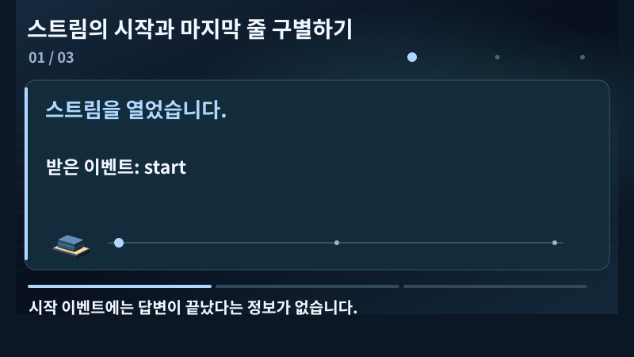
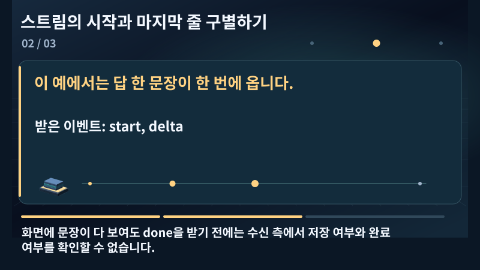
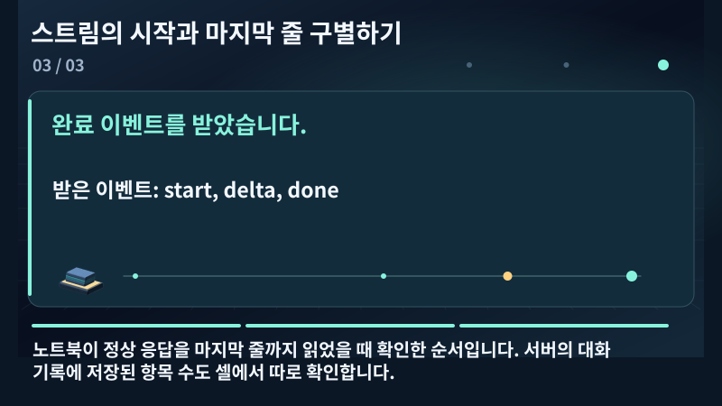

사용자별 대화와 스트림을 구분하기
답이 화면에 한 조각 보인 뒤 연결이 끊겼습니다. 사용자는 답을 다 받은 것일까요? 전체 서비스는 검증을 마친 답을 NDJSON으로 나누어 보냅니다. 노트북에서는 고정한 답을 사용해 일부만 받았을 때와 저장 뒤 완료 이벤트를 받았을 때를 구분합니다.
수업 노트북
실행을 확인한 커널은 Python 3.12.15입니다. 예제에 사용한 외부 패키지는 fastapi 0.135.0입니다.
한 줄에 이벤트 하나 보내기
‘start’에서 출발해 ‘delta’를 거친 뒤 ‘done’가 되는 순서를 따라가세요.
한 줄씩 온 이벤트를 start, delta, done 순서로 읽습니다.
NDJSON에서는 JSON 객체 하나 뒤에 줄바꿈을 둡니다. 실제 네트워크 조각의 끝이 줄의 끝과 일치하지 않을 수 있으므로, 클라이언트는 완성된 줄부터 읽습니다. 아래는 /conversations/{cid}/stream 경로의 줄 단위 전송과 소유자 검사를 축약한 로컬 앱입니다.
직접 실험하기 · 3D 시뮬레이션
셀 01 · 제공 셀 · 대화 소유자와 스트림 경로
start가 보낸 요청 ID를 보관합니다. 이 예제의 delta는 이미 만든 답을 나눈 조각입니다.
import json
from fastapi import FastAPI, Header, HTTPException
from fastapi.responses import StreamingResponse
from fastapi.testclient import TestClient
app = FastAPI()
owners = {"chat-a": "course-alice"}
history = {"chat-a": []}
def line(kind, **fields):
return json.dumps({"type": kind, **fields}, ensure_ascii=False) + "\n"
@app.post("/conversations/{cid}/stream")
def stream(cid: str, body: dict, x_course_token: str = Header()):
if owners.get(cid) != x_course_token:
raise HTTPException(404)
def events():
yield line("start", request_id="demo-1", llm_token_stream=False)
answer = "과제함에 제출하세요."
yield line("delta", text=answer)
history[cid].append((body["question"], answer))
yield line("done", answer=answer)
return StreamingResponse(events(), media_type="application/x-ndjson")
client = TestClient(app)여기서는 공개 수업용 토큰을 소유자 구분에만 씁니다. 실제 로그인, 외부 모델 토큰 스트리밍, 네트워크 재접속은 구현하지 않았습니다.
셀 02 · 완료 이벤트까지 줄별로 읽기
질문 한 건을 보내고 이벤트 종류를 받은 순서대로 확인하세요.
with client.stream("POST", "/conversations/chat-a/stream",
headers={"X-Course-Token": "course-alice"},
json={"question": "과제는 어디에 내나요?"}) as response:
events = [json.loads(record) for record in response.iter_lines()]
print([event["type"] for event in events])
print(len(history["chat-a"]))실행 결과
['start', 'delta', 'done'] 1
start, delta, done 뒤에 이력 수 1이 보입니다. done을 내보내기 직전에 이력을 저장했습니다. TestClient에서는 실제 휴대폰의 전송 간격이나 중단 동작을 측정하지 않습니다.
스트림의 시작과 마지막 줄 구별하기
응답 글자가 보이기 시작하는 때와 수신 측이 완료를 알게 되는 때를 단계별로 보세요.
| 셀 02·과제 03에서 관찰한 값 | 해석 |
|---|---|
| 서버 이력 1건 | 셀 02가 정상 완료된 뒤 저장된 수 |
| 수신 목록 [start, delta] | 과제에서 끝을 잘라낸 목록 · 완료를 확인할 수 없음 |
| 수신 목록 [start, delta, done] | 클라이언트가 완료 이벤트까지 받음 |
delta에서 문장이 다 보이는 때와 done이 도착한 때를 구분하세요.
부분 표시와 수신 완료는 다른 상태입니다. 완료는 끝 신호를 받아야 확인할 수 있습니다.
- 01시작
- 02본문
- 03완료

STEP 01 · start스트림을 열었습니다.
시작 이벤트에는 답변이 끝났다는 정보가 없습니다.
받은 이벤트: start

STEP 02 · delta이 예에서는 답 한 문장이 한 번에 옵니다.
화면에 문장이 다 보여도 done을 받기 전에는 수신 측에서 저장 여부와 완료 여부를 확인할 수 없습니다.
받은 이벤트: start, delta

STEP 03 · done완료 이벤트를 받았습니다.
노트북이 정상 응답을 마지막 줄까지 읽었을 때 확인한 순서입니다. 서버의 대화 기록에 저장된 항목 수도 셀에서 따로 확인합니다.
받은 이벤트: start, delta, done
보이는 답과 완료 상태 나누기
‘부분 응답’가 가운데 ‘종료 이벤트’에 도착한 뒤 오른쪽에 어떤 결과가 남는지 보세요.
부분 답변이 보이는 동안에도 완료 여부는 따로 확인합니다.
저장 뒤 발송한 완료 신호를 클라이언트가 받지 못할 수도 있습니다. 문장이 마침표로 끝났다는 이유만으로 저장 여부를 확정하면 안 됩니다.
과제 03 · 일부 이벤트만 받은 화면
수신 기록의 마지막 done이 빠졌습니다. 화면이 완료를 확인할 수 있는지 검사하세요.
먼저 끝까지 받은 events에서 마지막을 잘라 수신자가 본 앞부분만 재현합니다. 여기서 완료 신호를 못 봤다고 해서 서버 저장도 실패했다고 결론 내릴 수는 없습니다. 이 노트북에서는 history의 저장 기록을 따로 확인하세요.
partial = events[:2]
# 이벤트 목록에 done이 있는지 검사하세요.풀이와 실행 결과 보기
partial = events[:2]
print(any(item['type'] == 'done' for item in partial))실행 결과
False
False입니다. 이는 클라이언트가 완료 신호를 보지 못했다는 뜻입니다. 서버 이력의 저장 여부는 대화를 다시 조회해야 확인할 수 있습니다.
과제 04 · 다른 사용자 대화 보기
같은 경로에 course-bob으로 요청하고 HTTP 코드를 확인하세요.
# chat-a 경로에 bob의 수업용 토큰으로 요청하세요.풀이와 실행 결과 보기
other = client.post('/conversations/chat-a/stream', headers={'X-Course-Token': 'course-bob'}, json={'question': '제출 위치'})
print(other.status_code)실행 결과
404
404입니다. 다른 사용자의 대화 존재 여부나 내용을 응답에 포함하지 않았습니다.
다시 풀어 보기
스트림에 출력된 답, 서버에 저장된 턴, 화면이 확인한 완료 신호를 따로 기록하세요. 70장에서는 같은 저장 규칙을 문서와 데이터베이스로 이어갑니다.
관련 개념 더 읽기
공개 신원 대역의 한계를 먼저 알기
X-Course-Token 헤더에 course-alice 또는 course-bob을 넣으면 서버의 고정 표에서 사용자를 찾습니다. 이 값은 교재에 공개되어 있어 누구나 따라 쓸 수 있습니다. 실제 비밀 토큰, 로그인, 인증 서비스를 구현한 예제가 아닙니다.
본문에 user_id를 넣어 소유자를 바꾸는 것은 허용하지 않습니다. 애플리케이션이 정한 문맥을 함수에 전달하고 그 문맥으로 대화를 조회합니다. 401은 이 공개 대역을 선택하지 않은 요청이고, 404는 없거나 다른 소유자의 대화입니다.
| 값 | 역할 | 권한 증명인가 |
|---|---|---|
| course-alice | 공개 예제 주체 선택 | 아니오 |
| conversation_id | 대화 자원 식별 | 아니오 |
| TrustedContext | 앱 내부의 호출 문맥 | 객체 생성 자체는 인증 아님 |
대화 생성과 소유 조회를 같은 흐름에 놓기
POST /conversations는 새 UUID를 만들고 owner와 빈 turns 목록을 저장합니다. GET /conversations/{id}는 같은 owner일 때만 이력을 돌려줍니다. 아직 데이터베이스가 아니므로 프로그램이 끝나면 목록도 없어집니다.
질문 전에 소유 조회를 합니다. 타인 대화를 먼저 S1에 전달한 뒤 응답만 숨기는 방식이면 불필요한 검색·생성이 이미 일어날 수 있습니다. 제공 검사에서는 타인 접근 시 서비스 호출 목록이 빈지 확인합니다.
같은 UUID에 같은 내부 키를 사용하기
UUID는 대문자나 하이픈 없는 문자열로 입력될 수 있습니다. 소유 조회만 UUID로 바꾸고 서비스 호출에는 원문 문자열을 쓰면 같은 대화가 서로 다른 내부 키로 보일 수 있습니다. canonical_id는 표준 문자열을 만들고 그 값을 이후 경로에 계속 사용합니다.
thread_key는 사용자 문자열의 길이와 사용자, 표준 대화 ID로 구성한 내부 식별값입니다. 인증 토큰이 아니며 클라이언트에게 권한으로 전달하지 않습니다. 소유 조회를 통과한 다음에만 만듭니다.
먼저 비스트리밍 질문과 이력을 확인하기
기본 UI는 POST /conversations/{id}/ask를 사용합니다. 질문을 확인하고 S1의 전체 완료 외피를 받은 뒤 이력에 복사합니다. 응답에는 persistence.status=stored_in_memory와 durable=false를 추가합니다. S1의 result와 metadata는 바꾸지 않습니다.
이력을 저장했다고 S1이 과거 대화를 모델 입력으로 읽는 것은 아닙니다. 이 예제는 매 요청 소유 대화 한 개로 새 읽기 서비스를 구성하며 과거 turns를 자동 프롬프트에 넣지 않습니다. 기억 기능을 채택하지 않은 이유를 설명할 수 있어야 합니다.
| 순서 | 요청 | 확인 |
|---|---|---|
| 1 | POST /conversations + 공개 헤더 | 새 conversation_id |
| 2 | POST /conversations/{id}/ask + question/k | S1 외피 + persistence |
| 3 | GET /conversations/{id} | question/envelope가 보존된 turns |
| 4 | 다른 공개 사용자로 같은 ID 조회 | 404; 이전 내용 미노출 |
스트림을 시작하기 전에 확인할 것
스트림은 한 번 응답 헤더를 보낸 뒤에는 일반 JSON 오류 응답으로 되돌리기 어렵습니다. 그래서 prepare_stream이 소유권, 입력, S1 결과, 전체 JSON을 먼저 검사합니다. 실패하면 이벤트를 하나도 내보내지 않고 정상 HTTP 오류 경로로 돌아갑니다.
읽기 서비스는 completed 또는 error만 지원합니다. 승인 대기 상태를 받아 임의의 “대기 중” A1으로 바꾸거나 이력에 답변으로 넣지 않습니다. 이번 스트림은 완료된 A1만 분할합니다. 오류의 안전한 코드와 위치는 그대로 남깁니다.
NDJSON의 시작·조각·완료·오류 읽기
NDJSON은 JSON 객체 하나를 한 줄에 놓는 전송 표현입니다. 줄을 문자열 덩어리로 합친 뒤 JSON 한 번으로 읽으면 안 됩니다. 각 줄을 하나씩 파싱하고 type을 봅니다. 브라우저가 받는 네트워크 청크와 JSON 한 줄의 경계가 같다는 보장도 없습니다.
start는 요청 식별자와 대화, validated_answer_chunks 모드를 알립니다. delta는 답의 일부 문자열입니다. done에는 저장 후 전체 envelope가 들어 있습니다. error는 완료 저장으로 판정할 수 없는 상황입니다. 중간 delta만 보고 출처 검증을 다시 생략하지 않습니다.
| type | 주요 값 | 클라이언트 해석 |
|---|---|---|
| start | request_id,conversation_id,llm_token_stream=false | 새 응답 준비 |
| delta | request_id,text | 표시 중인 조각 |
| done | request_id,conversation_id,envelope | 전체 완료 기록 확인 |
| error | error_type,failure_stage,envelope | 저장 실패 등; done으로 바꾸지 않음 |
중단과 저장 시점의 차이 관찰하기
stream_events는 start 뒤에 답을 나누어 내보내고, 청크 사이 await에서 취소를 전달받을 수 있습니다. 모든 조각을 보낸 다음 이력을 저장하고 done을 만듭니다. 중간에 generator를 닫는 로컬 검사는 완료 이력이 추가되지 않는지 확인합니다.
반대로 저장 직후 클라이언트 연결이 끊기면 서버에는 이력이 있지만 사용자는 done을 못 볼 수 있습니다. 이 예제는 정확히 한 번 전달, 중복 제거, 자동 재시도를 보장하지 않습니다. “완료 표시를 못 봤으니 다시 보내도 안전하다”는 결론을 내리지 않습니다.
저장 실패에서도 생성 결과 보존하기
비스트리밍 저장이 실패하면 응답의 HTTP 설계값은 503입니다. run_status=completed와 생성된 A1은 그대로 남고 persistence에 실패가 기록됩니다. 서비스 완료를 저장 완료로 오해하지 않도록 필드를 나눈 것입니다.
스트림에서는 저장 실패 시 error 이벤트를 내고 done을 내지 않습니다. error 안의 envelope는 이미 검증한 답을 보존합니다. 원시 예외 문자열을 노출하지 않으며 다음 요청은 새 실험으로 분리합니다. 실패했다고 과거 정상 이력을 지우지 않습니다.
| 관측 | 기록할 결과 |
|---|---|
| HTTP 503 + completed A1 | 서비스 완료/저장 실패를 따로 기록 |
| delta 뒤 종료 | 전송 중단; 완료 이력 주장 금지 |
| error 이벤트 | 오류 위치와 완료 여부 확인 |
| done 이벤트 | 전체 envelope 확인; 실제 사용자 수신 보장은 별도 |
학생 과제: 이벤트의 최종 상태 판정하기
student_task.py의 summarize(events)를 구현합니다. done으로 끝나면 delivery=done과 최종 answer를, error로 끝나면 delivery=error와 answer=null을, 조각만 받고 끝나면 interrupted와 answer=null을 반환합니다. 아무 이벤트도 없으면 not_started입니다.
이 요약 함수는 화면의 완료 표시를 판단하는 과제입니다. error 안의 보존 envelope를 삭제하거나 원본 이벤트를 바꾸는 함수가 아닙니다. 별도 전체 기록은 그대로 보관합니다.
준비된 앱 검사를 실제 관측과 구분하기
check_http_prepared.py는 공개 헤더 누락, 타인 대화, 잘못된 요청, 비스트리밍 이력, NDJSON 완료를 TestClient로 확인하도록 준비되어 있습니다. 설치되지 않은 환경에서 파일을 읽는 것은 TestClient 실행 통과가 아닙니다.
CORS는 서버가 신뢰하는 allowed_origins 목록으로 구성합니다. 개발 UI 예의 http://localhost:5173은 선택한 정확한 origin이며 모든 주소를 허용하지 않습니다. CORS가 허용됐다는 사실도 공개 토큰의 사용자를 인증해 주지는 않습니다.
| 대상 | 상태 |
|---|---|
| 실제 S1 + 메모리 + asyncio 이터레이터 | 로컬 14검사 PASS |
| TestClient·ASGI 취소·실제 소켓 | 미실행 |
| 프로세스 재시작 뒤 메모리 유지 | 지원하지 않음 |
| 실제 인증·모델 토큰 스트리밍 | 구현 범위 아님 |
70일 저장 경계로 넘기기
70일에는 소유 대화와 문서를 B1에서 조회하고 전체 A1을 저장합니다. 이 장의 메모리 이력을 데이터베이스 저장이라고 기록하지 않습니다. done 전에 저장한다는 순서, 취소 시 완료 이력을 남기지 않는 조건, 저장 실패에서도 답을 보존하는 외피를 인계합니다.